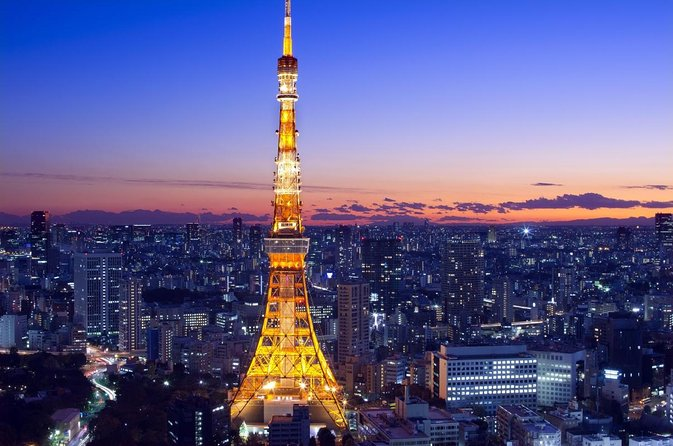

|  | Tokyo Tower OverviewOne of the most striking places to visit in Tokyo is the Tokyo Tower,perhaps the most recognizable structure in all of Japan. Although it is primarily a communications tower, visitors can climb to the summit to observe a panoramic view of The tower is also heavily inspired by the Eiffel Tower in Parisin its structure and architecture. The tower is a symbol of Japanese recovery after the Second World War and the fact that the country has now become a major economic superpower. Location: 4 Chome-2-8 Shibakoen, Minato City, Tokyo 105-0011, Japan Timing: Monday to Sunday (10:30 a.m. 8:00 p.m.) Entry fee: 1,200 yen for adults. Want To Know More About Tokyo Tower ? click On Me |
|---|
 |
The Empire State BuildingThe Empire State Building is a 102-story Art Deco skyscraper in theMidtown South neighborhood of Manhattan in New York City. The building was designed by Shreve, Lamb & Harmon and built from 1930 to 1931. Its name is derived from "Empire State", the nickname of the state of New York. Address: 20 W 34th St., New York, NY 10001, United States Height: 381 m, 443 m to tip CTBUH Cost: $40,948,900; (equivalent to $637 million in 2022) Floors: 102 Floor area: 2,248,355 sq ft (208,879 m2) Opened: May 1, 1931; 92 years ago Construction started: 17 March 1930 Phone: +1 212-736-3100 Hours: Open ⋅ Closes 11pm click On Me |
|---|
MaldivesThe Maldives, officially the Republic of Maldives, is a country and archipelagic state in South Asia in the Indian Ocean.The Maldives is named after the main island and capital of Male. The word "Maldives" means "the islands of Male". Capital: Malé Currency: Maldivian Rufiyaa President: Mohamed Muizzu click On Me |
|---|